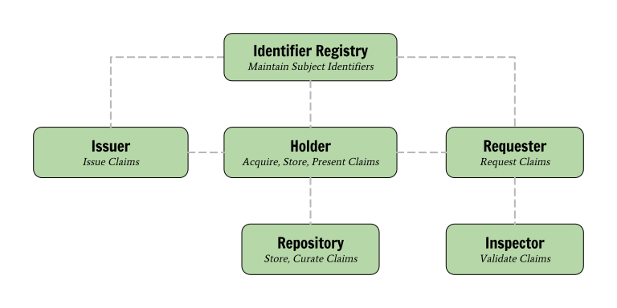
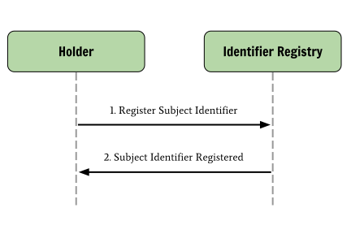
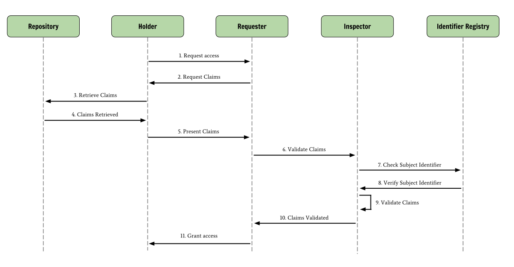

It is currently difficult to transmit banking account information, proof of
age, education qualifications, healthcare data, and other sorts of verified
information via the Web. These sorts of data are often referred to as
verifiable claims. This a summary of an architecture that
aspires to address part of this problem.
Long-term goals for the Verifiable Claims work include:
Establish an architecture where the holder of a verifiable claim is in
complete control of their identifier, where their claims are stored, and
how they are used.
Enhance website usability by removing the need to manually enter verifiable claims
Reduce fraud by creating a standard way to share verifiable qualifications
Ensure maximum privacy in claims sharing mechanism
Proposed Verifiable Claims Architecture Goals
Architectural goals for the Verifiable Claims work include:
Separate production and control of an identifier from the production of claims associated with the identifier
Separate control of claims sharing from creation of claims
Develop standards for interactions between architectural roles, independent of market vertical
Re-use existing protocols where appropriate
The Structure of a Verifiable Claim
In order to understand the Verifiable Claims Architecture, we propose the
following terminology:
Claim
A statement about a Subject.
Subject
The entity that a Claim is about. The Subject is identified by an identifier.
Verifiable Claim
A Claim with cryptographically protected authenticity, integrity, and
non-repudiability.
A set of verifiable claims are composed of four parts:
A subject identifier, which identifies the subject.
A set of claims about the subject.
Metadata about the claims themselves, such as the entity that made them
and an expiration date.
A digital signature by the issuer of the claims.
Fig. 1 - The structure of a set of verifiable claims
Architecture Block Diagram
An architecture for verifiable claims must distinguish the essential
roles of core actors and the relationships between them; how do they interact?
A role is an abstraction that might be implemented in many different ways. The
separation of roles suggests likely interfaces and/or protocols for
standardization. The following roles exist in the Verifiable Claims
Architecture:
Holder
Acquire verifiable claims from an Issuer and selectively provide them to
Inspectors. The Holder is often, but not always, the Subject of the claims.
Issuer
Issue verifiable claims to Holders.
Inspector
Request verifiable claims from Holders in order to authenticate them.
Identifier Registry
Mediate creation and verification of globally-unique identifiers. The
registry MUST manage identifiers in a self-sovereign way.
Repository
Store and curate verifiable claims on behalf of Holders.
Verifier
Verify verifiable claims on behalf of Inspectors. For example, Inspectors may
provide deeper verification by applying certain industry-specific business
rules on claims.

Fig. 2 - Roles in the Verifiable Claims architecture
As the diagram above depicts, the basic verifiable claims architecture
separates the basis for identification, the generation of claims associated
with an identifier, and the processes for managing and using claims.
Although other claims mechanisms already exist, they suffer a
number of inherent limitations, mostly caused by tight integration between
the production of an identifier and the production of claims, and/or the
production of claims and the storage of claims. The proposed basic architecture
decouples the production of an identifier, the production of claims, and the
storage/usage of claims. This ensures a more modular, flexible, and
competitive ecosystem.
An Exemplary Use Case
In order to understand how all of the actors and roles in the ecosystem
interact, consider the following use case:
Jane wants to apply to graduate school at multiple universities. To do so,
she must take an exam and send the results of that exam to each university.
Holder Registers Subject Identifier
In order for Jane (Holder and Subject) to have information assigned to her,
she must get an identifier (Subject Identifier).

Fig. 3 - The Holder Registers Subject Identifier
Holder Requests Claim from Issuer
Jane (Holder) then takes a university entrance exam at a testing facility
(Issuer) and receives proof (set of verifiable claims) that she achieved a
good score.
Fig. 4 - Holder Requests Claim from Issuer
Holder Presents Claim to Inspector
Jane (Holder) applies to a university (Inspector) which asks her to provide
proof (Verifiable Claims) that she got a good score on the entrance exam.

Fig. 5 - Holder Presents Claim to Inspector
The university checks Jane's claims and verifies that she qualifies to apply
to graduate school.
Architecture Benefits to Stakeholders
All Stakeholders
Levels competitive playing field (not just a few super-providers)
Ability to participate in broader ecosystem resulting in common tooling to
process verifiable claims
Avoidance of vendor-specific solutions and lock-in
Holders
No identity provider lock-in
Digital claims that can be used in more than one location
Ability to aggregate verifiable claims as cohesive digital identities
Privacy-enhanced sharing mechanism
Control of confidential information
Elimination of repetitive input at websites
Reduction in the need to input personally identifiable information (PII)
Repositories
Higher-stakes verifiable claims being stored resulting in more value-added
services on top of storage services
Any person or organization may provide verifiable claims storage and management
solutions, not just a few super providers
Reduced software costs via standards-based, off-the-shelf verifiable
claim repository software.
Issuers
Any person or organization may issue verifiable claims, not just a select few.
Reduced software costs via standards-based, off-the-shelf verifiable claim
issuing software.
Reduced infrastructure costs due generalized claim issuing software.
Inspectors
Better understanding of the user due to a richer set of verifiable claims
to choose from
Increased ability and choice to trust authenticity of verifiable claims
Any person or organization may inspect and verify the validity of a set of
verifiable claims.
Reduced software costs via standards-based, off-the-shelf verifiable claim
inspection software.